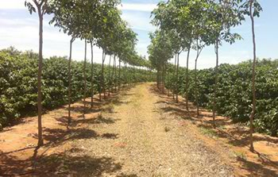
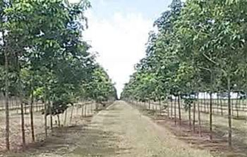

Fernando Guerra
Diretor Administrativo
Consultoria em heveicultura
Gerimos suas atividades agrícolas com estratégias direcionadas ao seu negócio, para chegar ao melhor resultado.
Quem somos
A Santa Helena Consultoria Agrícola trabalha com estratégias sob medida para cada operação e para cada investidor.
Nossa equipe reúne engenheiros agrônomos e profissionais qualificados em diferentes regiões, para que o empresário possa se dedicar ao negócio principal enquanto o seringal se desenvolve com a máxima eficiência.

Serviços
Desenvolvemos projetos agrícolas para a implantação de seringais em várias regiões do país, garantindo aos investidores máxima eficiência e o melhor retorno sobre o investimento.
Diagnosticamos sua empresa agrícola e entregamos uma visão real do negócio ao empresário, aos investidores e aos administradores.
Administramos seus negócios com formas adequadas de controle e gestão, fortalecendo a empresa para enfrentar a dinâmica atual do mercado. É a melhor combinação possível entre as atividades e os meios de produção, para obter renda máxima.
Profissionais qualificados para assessorar sua empresa, mantendo-a competitiva e operando sempre com alta performance. O empresário se dedica ao negócio principal e tem a tranquilidade de ver o negócio acessório se desenvolver com máxima eficiência.
Em campo
Registros do trabalho no seringal: da muda ao viveiro, do plantio à sangria.





Contato
Diretor Administrativo
Rua Oreste Stelutti, 775 - Casa 02
Vila Operária - Guaraçaí/SP
CEP 16982-030